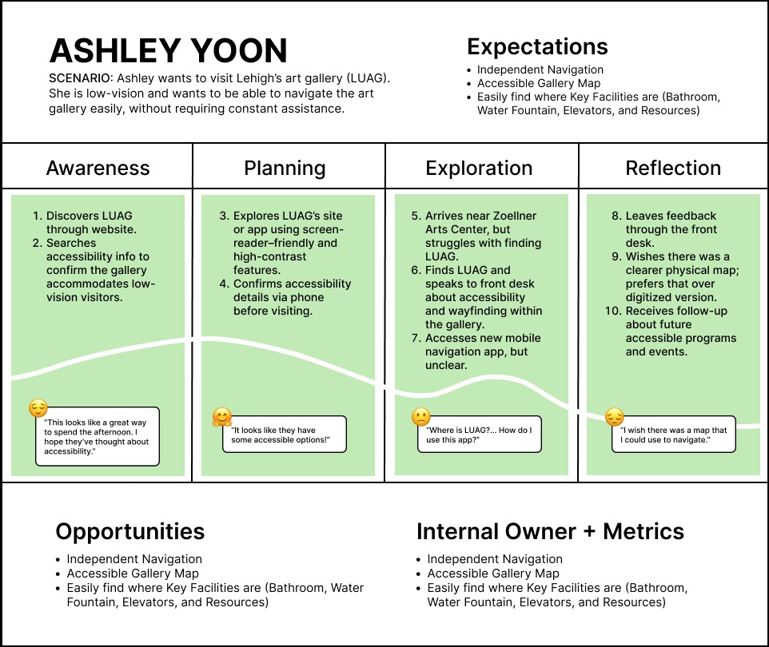

NAVIGATING LUAG (2025)

UX Design | Inclusive Design
Tools: Adobe Illustrator, Figma, Laser Cutter
Team: Dayna Ha, Jua Kim, Ashley Yoon, Dustin Braufman, Hayden Highley
UX Case Study: Our group aimed to create an accessible and inclusive 2D and 3D map for Lehigh University Art Gallery (LUAG) and also signage to indicate the location of the facilities inside LUAG for visually impaired visitors.
Overview
Many visitors to the Lehigh University Art Gallery struggled to navigate its interior, limiting access and engagement with the space. Our team designed a comprehensive wayfinding system to address this, delivering three components:
- Bilingual directional signage in English and Spanish
- A 2D print map with a separate Braille tactile overlay
- A 3D printed tactile floor model of the gallery
Tools used included Figma, Adobe Illustrator, and Blender. The project reinforced that effective wayfinding shapes how people feel within a space and determines who feels welcome in it.
The Problem
- Many visitors struggled to locate LUAG or navigate its interior spaces
- Limited access and overall engagement with the galleries
- Existing signage and maps were minimal and not designed with accessibility in mind
The brief challenged us to address three key goals: clarity, accessibility, and aesthetics. We wanted to create a welcoming experience for all individuals from the moment they arrived.
User Research
We conducted interviews and mapped journeys for visitors who experience the gallery differently. Two primary user types shaped our design decisions:
- Visitors with low vision — need high-contrast wayfinding, clear hierarchy, and predictable paths through the space.
- Visitors who rely on Braille — need tactile information that can be read by touch, including overlays and a 3D floor model.

Progress: Directional Signage

As a group, we conceptualized signage that would be simple and accessible to all visitors while blending seamlessly into the gallery environment. We chose to use the same color palette and typography already established by LUAG, so the signage would feel like a natural extension of the space rather than a distraction. The signs are bilingual in English and Spanish, with deliberate spacing between the two languages to avoid visual confusion. We focused on the three facilities that visitors most frequently struggled to locate: the water fountain, elevator, and restroom. Placement was a key consideration as well, with spots selected throughout the gallery to maximize visibility and ensure visitors could orient themselves with ease. The signage was designed and produced by Dustin.
View full signage files →Progress: 2D Map
Digital Work